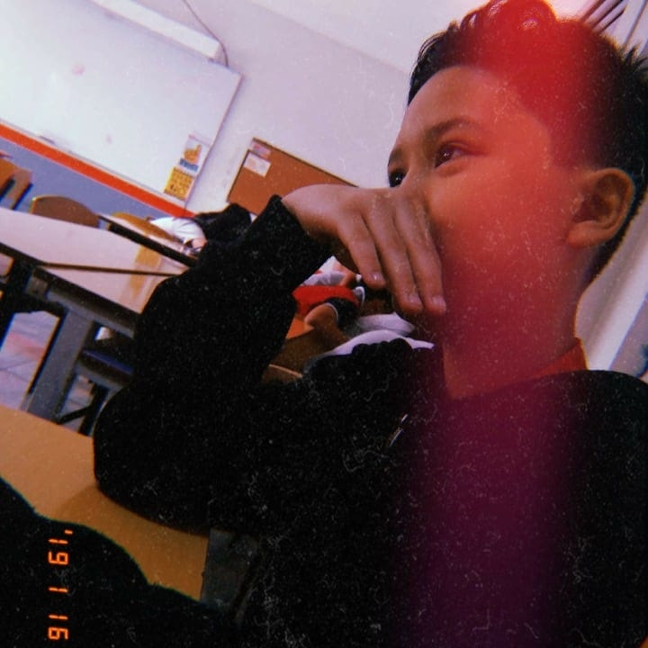

- a method of transmitting or receiving data (especially video and audio material) over a
computer network as a steady, continuous flow, allowing playback to start while the rest
of the data is still being received.
- a method of transmitting or receiving data (especially video and audio material) over a
computer network as a steady, continuous flow, allowing playback to start while the rest
of the data is still being received.
The following are the 3 types of streaming content we focused on:
➨ Gaming Content
➨ Music Content
➨ Vlog Content
Gaming Content: This is generally the most used content out there since gaming is interesting
and can create communities and connect other people to each other. This content has the streamer
playing different types of games the audience has played, will play, or will never be able to play.
Demographic ( since different streaming websites have different demographics, we will focus on
twitch since it mostly consists of game streams.)
➨ Age - 70% of Twitch viewers are between the ages of 16 and 34, with the remaining 30% are people
that are 35+ years old.
➨ Gender - Twitch’s demographic consists of 65% male users with the remaining 35% as the female
audience excluding those who identify themselves otherwise.
Opinion
➨ For the community—to be part of something larger than oneself
➨ For the inclusion—to feel accepted
➨ For the fun of it—to escape
➨ For the desire to improve—to learn new skills
Music Content: Music is everywhere so there is no doubt music content is widespread and a lot of people have heard about music.
Music can change lives, maybe not in a big part of our lives but the parts where there is emotional damage.
Demographic
➨ Age - 68% of adults aged between 18 and 34 years leaving 32% are ages 35+.
➨ Gender - men by 97.7% and women 2.3%
Opinion
➨ Music can help calm the minds of listeners, well that is depending on the type of music you listen to.
It can help ease the stress and loneliness.
Vlog Contents: Vlog contents have started to pop up more frequently as many people are continually watching this type of content on the internet.
Demographic
➨ Age - Ages 16 - 24
➨ Gender - 78% male and 22% female
Opinion
➨ Some vloggers are relatable since their contents are mostly travel, lifestyle and others.
Watching how people are in their daily lives is very
interesting since two or more people aren’t the same, they live differently.
Need of viewers for the 3 types of content
➨The interaction you get when you have viewers is very different when you are doing things alone.
Having viewers, you have their opinions on what to decide on next or where to go next.
➨Viewers share your triumphant moments and your losing moments, sharing the emotions
you feel feels like you’re there with them when you achieve those moments.
➨Viewers can also become the people you can come to, since most viewers sympathize
with the content creator on what they are going through at the moment.
A good stream needs of course good but equipment is not always everything.
You need to interest the viewers, to do that, write an interesting title and create
a nice thumbnail. The first thing the viewers will see will be the thumbnail and the
title, if the title doesn't peak there interest, most won't bother watching your stream.
What else is needed? Your personality, bring it to the stream to make it more
interesting and make the viewers think that they are your friends hanging out with you.
Donaire, Ivan Hart L.
De Larrazabal, Andrei
